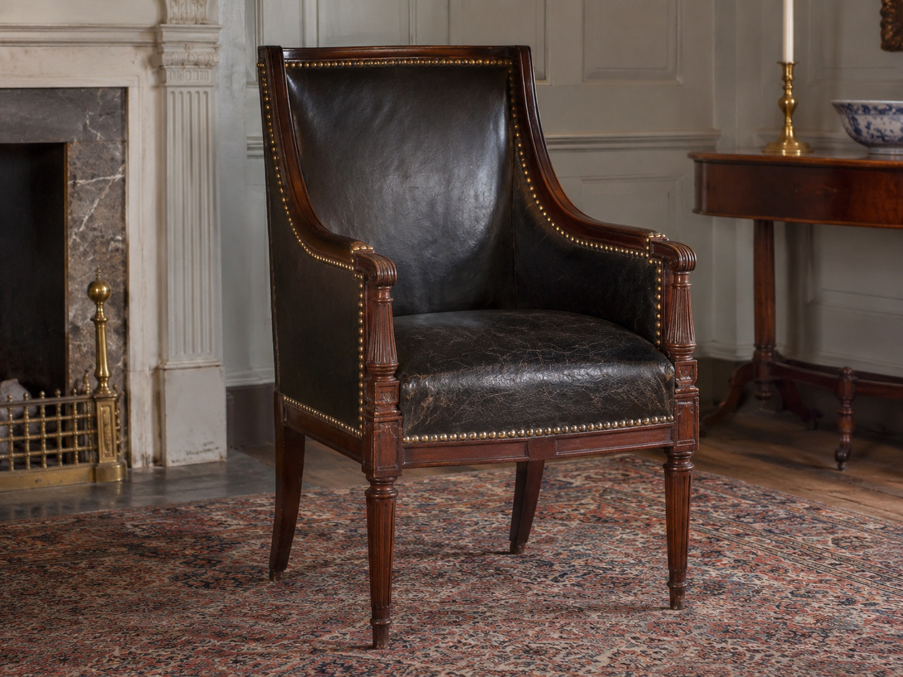

Susannah Ingersoll's Armchair
House of the Seven Gables | Salem, Massachusetts
The Artifact
Among the furnishings preserved in the House of the Seven Gables collection is an early nineteenth-century American Sheraton bergere armchair once owned by Susannah Ingersoll.
Dating to approximately 1830, the chair was manufactured in the Boston or Salem area. It incorporates mahogany, ash, black leather upholstery, and decorative brass nails.

Its Story
Susannah Ingersoll inherited the Turner-Ingersoll mansion following the deaths of her parents and brothers. She became a successful property owner in Salem, acquiring substantial real estate holdings during her lifetime.
Susannah was also a relative of the author Nathaniel Hawthorne, who visited her at the family mansion. Historical accounts describe gatherings that included conversation and card games.
According to the House of the Seven Gables museum, the armchair is traditionally associated with Hawthorne, who is said to have favored it during visits to Susannah's residence.
The association is significant, but the museum presents Hawthorne's preference as a historical tradition rather than a conclusively established fact.
Connection to the Building
The Turner-Ingersoll mansion became internationally famous after Hawthorne published his novel The House of the Seven Gables in 1851.
Susannah's accounts of the mansion's architectural changes and family history influenced Hawthorne's understanding of the property. The building had once possessed seven gables, although alterations had changed its appearance by the time Hawthorne visited.
The armchair offers a physical connection to the domestic environment in which conversations between Susannah and Hawthorne took place.
Its preservation also illustrates the value of original furnishings in interpreting historic residences. Rather than relying entirely on a famous literary association, such artifacts reveal details about the lives of the people who actually occupied the house.
Sources and Image Credit
Ruane, A. (2025, September 2). Collections Corner: Susannah Ingersoll. The House of the Seven Gables. Museum collection and photograph
The House of the Seven Gables. Turner-Ingersoll Mansion. Architectural history and image-use policy